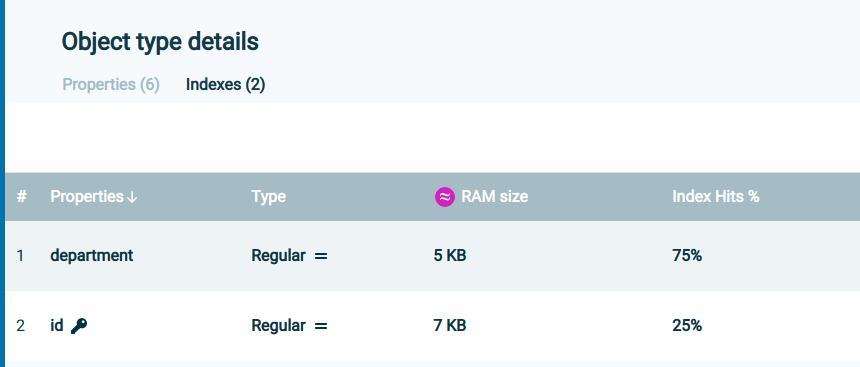

When memory consumption increases, it is advisable to verify whether the number of objects in the Space aligns with expected values and to assess whether the operational load has increased. Additionally, reviewing verbose Garbage Collector (GC) logs can help determine if the memory growth corresponds to actual memory usage or if it is due to garbage accumulation, which can be addressed by adjusting GC parameters.
To prevent OutOfMemory (OOM) exceptions, the Space includes a MemoryManager that helps mitigate OOM errors by blocking operations when memory usage reaches a predefined threshold.
Multiple configurable thresholds are available, allowing you to define when memory checks should be initiated per operation and when to block further operations once usage exceeds the specified limits.
| Parameters | Description | Default |
|---|---|---|
space-config.engine.memory_usage.
high_watermark_percentage
|
If the Space container's memory usage exceeds this threshold, a com.j_spaces.core.MemoryShortageException is thrown. | 95 |
space-config.engine.memory_usage.
write_only_block_percentage
|
Above this level, only read/take operations are allowed. | 85 |
space-config.engine.memory_usage.
write_only_check_percentage
|
Upper threshold for checking only write-type operations. Above this level, all operations are checked. | 76 |
space-config.engine.memory_usage.
low_watermark_percentage
|
Specifies the recommended lower threshold for the JVM heap size that should be occupied by the Space container. When the system reaches the high_watermark_percentage value, it evicts objects on an LRU basis, and attempts to reach the low_watermark_percentage value. This process continues until there are no more objects to be evicted, or until memory use reaches the low_watermark_percentage value. | 75 |
space-config.engine.memory_usage.
gc-before-shortage
|
If true, GC will be called before throwing shortage Exception. should be set to false when gc is tuned In addition its recommended to set java flag to avoid explicit GC (-XX:+DisableExplicitGC) | True |
space-config.engine.query.result.size.limit |
Limit size of multiple operations (till 16.1.1 only read, from 16.1.1 also takeMultiple & changeMultiple) throw related exception when reaching the limit | 0 |
space-config.engine.query.result.size.limit.memory.check.batch.size
|
From 16.1.1 version onwards, if this parameter is greater than zero, an internal memory check is performed during ReadMultiple/ChangeMultiple/TakeMultiple operations.Every batch of this size that is added to the result | 0 |
For large (above for 4G) heap size, the recommended parameters are 97,96,95 and false respectively.
You can disable the memory manager entirely or disable its activity in the backup. In the case of the LRU cache policy, these memory manager parameters must be used:
space-config.engine.memory_usage.enabled=true (Enables the memory manager for all Space instances, default setting).
space-config.engine.memory_usage.enabled=primary-only (Enables the memory manager for primary Space instances only).
When using a memory manager, it's essential to maintain a service limit of 1, ensuring only one service instance runs per JVM.
You can obtain log indicators for long GC events by setting the following parameter:
-Dgs.gc.collectionTimeThresholdWarning=1000
This will generate a warning if a GC cycle takes longer than 1 second.
Additionally, it is recommended to enable verbose GC logs for more detailed monitoring and analysis.
For example, in Java 8, you can enable verbose GC logging with the following JVM options:
XX:+PrintGCDetails
XX:+PrintGCDateStamps
XX:+PrintTenuringDistribution
XX:+PrintGCApplicationStoppedTime
XX:+UseGCLogFileRotation
XX:NumberOfGCLogFiles=10
XX:GCLogFileSize=10M
Xloggc:/path/to/gc.log
Using Java versions later than 8, you can enable GC logging using the following option:
Xlog:gc*:file=${LOG_DIR}/gc_%p.log:tags,uptime,time,level:filecount=10,filesize=10M
This configuration logs GC events to a file with tags, uptime, timestamps, and log levels, and it limits the number of log files to 10, with each file capped at 10MB.
When operations are blocked due to memory shortages, they should be retried, as the issue may be temporary.
Additionally, operations should also be retried if the Space is in suspended or quiesce mode.
When space-config.engine.memory_usage.gc-before-shortage is set to `false`, the assumption is that the GC is properly tuned and memory shortages will not occur. However, it is possible that memory is not truly being consumed, and GC will only be triggered after hitting the memory manager thresholds. To prevent this, there should be proper alignment between the memory manager thresholds and GC parameters. It is important to thoroughly test and tune the GC configuration to avoid unnecessary memory shortages.
The backup holds the same data as the primary but may exhibit different GC behavior due to its distinct activities. If a memory shortage exception occurs only in the backup and the service limit of 1 is maintained, this could indicate a false alarm. In such cases, further tuning of thresholds and GC settings is necessary.
By default, if a memory shortage exception is thrown in the backup, the Space instance is marked as unhealthy and stopped. The backup should then be reallocated, triggering a full recovery from the primary.
The system can be configured to generate a heap dump when a memory shortage occurs, allowing for in-depth debugging and heap analysis.
Relevant parameters for heap dump on memory shortage:
| Parameters | Description | Default |
|---|---|---|
com.gs.memory.create-heap-dump-on-memory-shortage
|
Turn on and off the heap dump | False |
com.gs.memory.max-heaps-on-memory-shortage
|
Turn off the heap dump after n times | 1 |
com.gs.memory.heaps-on-memory-shortage-quiet-period
|
How long to wait between heap dumps | 24 hours |
To ensure that a heap dump is generated in the event of an `OutOfMemoryError`, verify that the `-XX:+HeapDumpOnOutOfMemoryError` flag is set in your component's Java settings.
For additional information refer to memory management overview.
The memory manager should be configured to protect against `OutOfMemoryError` (OOM) conditions, but certain configurations or disabling the memory manager can still lead to OOM occurrences. Since the behavior of the process after an OOM is unpredictable, the default behavior of the `gs-agent` is to restart any process that reports an OOM.
Configuration Details:
In the gs-home/config/gsa directory, each component has its own configuration and regex expression definitions for process restart. The component will be restarted when the regex matches a log record.
Default restart regex: <restart-regex>.*java\.lang\.OutOfMemoryError.*</restart-regex>
Behavior on Restart:
If the Space instance was the primary, the backup will be promoted to the new primary while the failing instance is reallocated.
If the Space instance was a backup, the primary will continue to operate as usual (subject to the consistency level). The backup will perform a full recovery from the primary once it is reallocated.
When a client reads a large amount of data at once, performs a change operation, or executes multiple operations, the server may need to allocate, serialize, and send a significant number of objects back to the client.
To handle large data sets efficiently, a Space iterator should be used. Refer to the documentation on Space Iterator for more details.
To protect the Space from excessive client operations, configure the following settings:
space-config.engine.query.result.size.limit (Limits the number of results that a client can retrieve in a single operation).
space-config.engine.query.result.size.limit.memory.check.batch.size (Triggers memory checks during the execution of large operations to manage memory usage effectively).
Starting from version 15.5, you can estimate the memory consumption of each object type and property using the Ops Manager (accessible via the browser at `manager_host:8090`). This tool is intended for use in testing environments to help plan capacity based on the expected number of objects for each type.
For versions earlier than 15.5 or if the GS-Manager is not used, refer to the documentation on capacity planning for more details.
Using the Ops Manager from version 15.5:
To trigger an object analysis, click theRun Objects Analysis icon on the Ops Manager Space view screen. This icon is represented as a circle on the right side of the screen.
If the Space has no backup, the option to generate a report will not be available. Upon completion of the analysis, you will see the following message:
Click Show object analysis report to view the memory usage report.
Alternatively, you can click the icon next to the Report icon to access the report.
When generating a report, a heap dump of the relevant backup is taken and queried to determine the average property footprint and index footprint.
If a previous report exists, the current report will be compared with it to highlight any changes.
These reports are primarily intended for development and testing stages to optimize data structures and plan capacity. However, they can also be run periodically by an administrator to ensure that memory consumption is behaving as expected.
Report Storage:
Reports are stored as JSON files at `GS_HOME/config/ui/heapReports`.
Reports are stored in Zookeeper.
Report generation is not possible if no backup is available.
You can view the average property consumption per type in the report:
In the type definition under the Index tab, you can view the index efficiency and estimate its memory consumption relative to its usage.
In the Properties tab, you will see the estimated RAM usage for each property.

After estimating the memory consumption for each type and the expected number of objects, you should determine the appropriate number of partitions and consider using tiered storage to reduce RAM usage. Refer to the documentation on Tiered Storage Configuration for more details.
Additionally, you can reduce object footprints by storing some properties in binary or compressed formats.
Starting in version 15.8, out-of-the-box (OOTB) implementations are available for memory footprint reduction with minimal impact on performance:
Class-Level Storage Optimization
Property-Level Storage Optimization
Consider the following factors when determining the number of partitions:
Processing Requirements: How many cores are needed to handle processing and calculations for the data?
Initial Load Speed: How quickly should the initial load from the data source be completed?
Query and Task Performance: How fast should queries or tasks return results?
Increasing the number of partitions allows for greater parallelism, enabling the distribution of work across more processes. However, larger partitions may require more extensive GC tuning.
The number of partitions should strike a balance between CPU and memory requirements. Additionally, routing properties should be configured to ensure that memory consumption is evenly distributed across partitions.
To assist with this, a data distribution per partition graph has been added for visualization.
Starting from version 15.5, you can adjust the number of partitions at runtime. Refer to the documentation on Scale IN/OUT for more details.